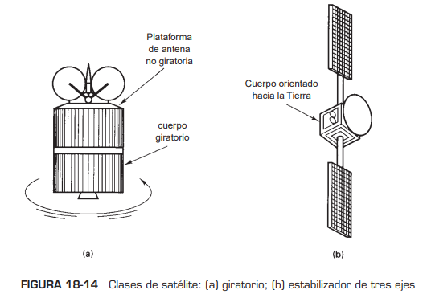
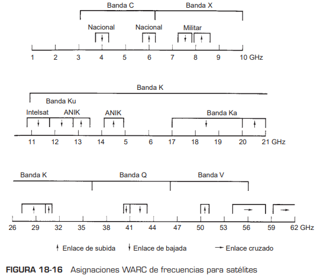
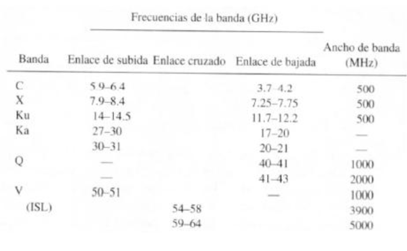
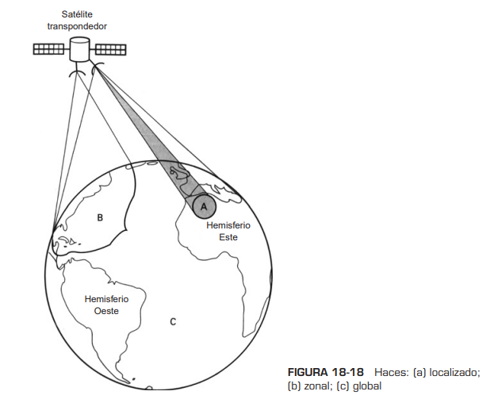
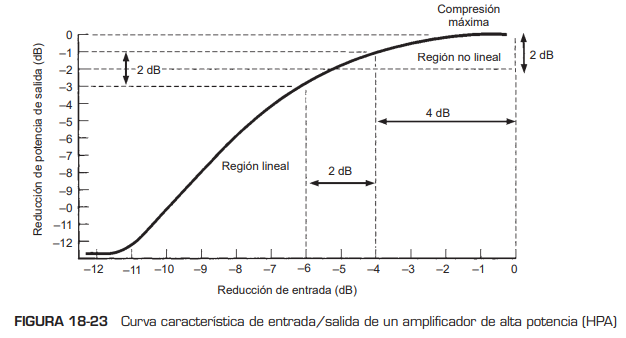
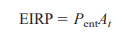
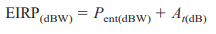
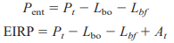

CLASIFICACIONES, ESPACIAMIENTO Y ASIGNACIÓN DE FRECUENCIAS DE SATÉLITES
Las dos clasificaciones principales de los satélites de comunicaciones son giratorios y con estabilizador de tres ejes. Un satélite giratorio aprovecha el momento angular de su masa giratoria para obtener estabilización de balanceo y cabeceo. En el satélite con estabilizador de tres ejes, el cuerpo permanece fijo en relación con la superficie terrestre, mientras que un subsistema interno proporciona la estabilización de balanceo y cabeceo. La figura a continuación (18-14) muestra las dos clasificaciones principales de los satélites de comunicaciones.
Los satélites geosíncronos deben compartir un espacio y un espectro de frecuencias limitados, dentro de determinado arco de órbita estacionaria. A cada satélite de comunicaciones se le asigna una longitud aproximada, en el arco geoestacionario, de 22,300 millas sobre el ecuador. La posición en el intervalo depende de la banda de frecuencias de comunicaciones que se use. Los satélites que trabajan la misma o casi la misma frecuencia deben tener una separación suficiente en el espacio para evitar interferir entre sí ( fig. 18-15). Hay un límite realista de la cantidad de satélites que pueden estacionarse en determinada área del espacio. La separación espacial requerida depende de las siguientes variables:
- Anchos de banda y lóbulos laterales de radiación de las antenas, tanto de la estación terrestre como del satélite.
- Frecuencia de portadora de RF.
- Técnica de codificación que se use.
- Límites aceptables de interferencia.
- otencia de la portadora de transmisión.
En general, se requiere una separación espacial de 3° a 6°, que depende de estas variables. Las frecuencias de portadora más comunes que se usan en comunicaciones vía satélite son las bandas de 6/4 y de 14/12 GHz. El primer número es la frecuencia de enlace de subida (estación terrestre a transpondedor), y el segundo es la frecuencia de enlace de bajada (transpondedor a estación terrestre). Se usan frecuencias distintas de enlace de subida y de bajada para evitar que haya radiación de pérdida . Mientras mayor sea la frecuencia de la portadora, el diámetro necesario de la antena es menor, para una ganancia dada. La mayoría de los satélites domésticos usa la banda de 6/4 GHz. Desafortunadamente, esta banda también se usa mucho en sistemas terrestres de microondas. Se debe tener cuidado al diseñar una red satelital, para evitar interferencias con otros enlaces existentes de microondas.
Algunas posiciones de órbita geosíncrona tienen mayor demanda que otras. Por ejemplo, la posición atlántica media, que se usa para interconectar Norteamérica con Europa, es de demanda excepcionalmente alta; la pacífica media también es otra de gran demanda.
Las frecuencias asignadas por la Conferencia Mundial Administrativa de Radio (WARC, de World Administrative Radio Conference) se resumen en la fig. 18-16.
La tabla 18-2 muestra los anchos de banda disponibles para varios servicios en Estados Unidos. Entre estos servicios están punto fijo (entre estaciones terrestres en puntos geográficos fijos), emisión (cobertura de áreas amplias), móvil (tierra a vehículos en aire, mar o tierra) e intersatelital (enlaces cruzados entre satélites).
PATRON DE RADIACIÓN DE ANTENAS SATELITALES:HUELLAS
El área que cubre un satélite en la Tierra depende de la localización del satélite en su órbita, su frecuencia de portadora y la ganancia de su antena. Los técnicos de satélites seleccionan la antena y la frecuencia de portadora para determinado satélite, de modo que concentre la potencia limitada de transmisión en un área específica de la superficie terrestre. La representación geográfica del patrón de radiación de la antena de un satélite se llama huella, o a veces mapa de huella. En esencia, una huella de un satélite es la zona, sobre la superficie terrestre, desde donde el satélite puede recibir o hacia donde puede transmitir. La forma de la huella de un satélite depende de su trayectoria orbital, su altura y el tipo de antena que se use. Mientras más alto esté el satélite, podrá abarcar más superficie terrestre. En la fig. 18-17 se ve una huella típica de satélite.
 Las curvas de nivel representan límites de igual densidad de potencia recibida
Las curvas de nivel representan límites de igual densidad de potencia recibida
Las antenas satelitales de enlace de bajada emiten señales en frecuencias de microondas, hacia una región geográfica seleccionada, dentro de la línea de vista del satélite. La potencia efectiva transmitida se llama potencia irradiada efectiva isotrópica (EIRP, de effective isotropic radiated power) y se expresa, en general, en dBm o dBW. Se traza un mapa de huella dibujando líneas continuas entre todos los puntos que tengan EIRP iguales. Un mapa característico de huella es, en esencia, una serie de curvas de nivel sobre un mapa geográfico de la región servida. Podría haber distintos mapas de huella para cada haz de radiación de cada satélite de comunicaciones.
La figura de las curvas de nivel y los niveles de potencia de una huella quedan determinados por detalles precisos del diseño de la antena de enlace de bajada, al igual que por el valor de potencia de microondas generadas por cada canal de a bordo. Si bien cada transpondedor es un circuito electrónico físicamente separado, las señales de varios transpondedores se suelen enlazar de bajada a través de la misma antena. Como es de esperarse, los niveles de potencia de recepción son mayores en las áreas hacia las que apunta la mira de la antena de bajada, y más débiles fuera de esas áreas. Un plato de antena receptora cerca de la orilla del área de cobertura de un satélite debe ser mayor que los que estén en el centro o cerca del centro del mapa de huella. Son necesarias antenas de estación terrestre con diámetros extremadamente grandes para recibir emisiones satelitales en áreas geográficas a grandes distancias de la mira de la antena de enlace de bajada. En forma característica, hay variaciones en los mapas de huella de distintos satélites. Por ejemplo, el satélite europeo de banda Ku tiene en general distribuciones de radiación en huellas que son circularmente simétricas, con niveles que disminuyen en forma lineal en áreas progresivamente alejadas del centro de la mira del satélite. Los satélites estadounidenses de banda C suelen tener niveles de potencia relativamente planos sobre la región de cobertura, con bajadas bastante pronunciadas de potencia fuera de las orillas. Los satélites lanzados en fecha reciente, como el DBS-1 (de emisión directa) estadounidenses han empleado antenas más complicadas de conformación de haz, en el enlace de bajada, que permiten a los diseñadores conformar las huellas para llegar sólo a áreas específicas y, por lo mismo, no desperdician potencia en áreas no planeadas.
que disminuyen en forma lineal en áreas progresivamente alejadas del centro de la mira del satélite. Los satélites estadounidenses de banda C suelen tener niveles de potencia relativamente planos sobre la región de cobertura, con bajadas bastante pronunciadas de potencia fuera de las orillas. Los satélites lanzados en fecha reciente, como el DBS-1 (de emisión directa) estadounidenses han empleado antenas más complicadas de conformación de haz, en el enlace de bajada, que permiten a los diseñadores conformar las huellas para llegar sólo a áreas específicas y, por lo mismo, no desperdician potencia en áreas no planeadas.
Haces locales y zonales
Los haces más pequeños son los haces localizados, y les siguen los haces zonales. Los localizados concentran su potencia en áreas geográficas muy pequeñas y, en consecuencia, suelen tener EIRP mayores que los que abarcan áreas mucho mayores, porque determinada potencia de salidase puede concentrar más. Los haces localizados y los zonales cubren menos del 10% de la superficie terrestre. Mientras mayor sea la frecuencia del enlace de bajada, un haz puede ser enfocado con más facilidad hacia una zona más pequeña. Por ejemplo, la nueva generación de satélites de alta potencia de banda Ku puede tener varios haces localizados que mandan las mismas frecuencias, transmitiendo distintas señales a áreas dentro de determinado país. En general, la mayor parte de las huellas de banda Ku no cubren áreas continentales completas y tienen cobertura geográfica más limitada que sus contrapartes de banda C. Por lo anterior, es importante tener un conocimiento más detallado de la EIRP local, para tratar de recibir emisiones de satélites de banda Ku.
Haces hemisféricos
Las antenas de enlace descendente hemisférico abarcan en forma característica hasta el 20% de la superficie terrestre y, por consiguiente, tienen EIRP 3 dB o 50% menores que las transmitidas por haces localizados que abarcan el 10% de la superficie terrestre.
Haces globales
Las distribuciones de radiación de las antenas de cobertura mundial o global tienen un ancho aproximado de banda de 17°, y son capaces de abarcar hasta un 42% de la superficie terrestre, que es la visual máxima de cualquier satélite geosíncrono. Los niveles de potencia son bastante menores en los haces globales que en los localizados, zonales o hemisféricos, y son necesarios grandes platos receptores para detectar en forma adecuada emisiones de video, audio y datos.
Reuso
Cuando se llena una banda asignada de frecuencias, se puede obtener una capacidad adicional reusando el espectro de frecuencias. Si se aumenta el tamaño de una antena (es decir, si se aumenta la ganancia de la antena), también se reduce su ancho de banda. Así, se pueden dirigir distintos haces de la misma frecuencia a distintas áreas geográficas de la Tierra. A esto se le llama reuso de frecuencia. Otro método de reuso de frecuencia es la polarización dual. Se transmiten distintas señales de información hacia distintos receptores en Tierra usando la misma banda de frecuencias, tan sólo con orientar sus polarizaciones electromagnéticas ortogonalmente (desfasadas 90°). La polarización dual es menos efectiva, porque la atmósfera terrestre tiene una tendencia a reorientar, o repolarizar, una onda electromagnética que pase por ella. El reuso no es más que otro modo de aumentar la capacidad de un ancho limitado de banda.
PARÁMETROS DEL SISTEMA DE SATÉLITES
Pérdida por reducción
Los amplificadores de alta potencia que se usan en las estaciones transmisoras terrestres y los tubos de onda viajera que se usan en los satélites transpondedores son dispositivos no lineales; su ganancia (potencia de salida entre potencia de entrada) depende del nivel de la señal de entrada. En la fig. 18-23 se muestra una curva característica de potencia de salida en función de potencia de entrada. Se aprecia que al paso que se reduce la potencia de entrada en 4 dB, la potencia de salida sólo se reduce 1 dB. Hay una compresión de potencia obvia. Para reducir la cantidad de distorsión por intermodulación causada por la amplificación no lineal del HPA, se debe reducir la potencia de entrada en varios dB. Esto permite que el HPA funcione en una región más lineal. La cantidad de reducción de nivel de salida respecto a los niveles nominales equivale a una pérdida, y se le llama con propiedad perdida por reducción (Lbo).
Potencia de transmisión y energía de bit
Para funcionar con la mayor eficiencia posible, un amplificador de potencia debe trabajar tan cerca como sea posible de la saturación. La potencia saturada de salida se representa por Po(sat) o simplemente por Pt. La potencia de salida de un transmisor de estación terrestre a satélite es mucho mayor que la de salida de un amplificador de potencia de transmisor terrestre de microondas.
En consecuencia, cuando se manejan sistemas satelitales, la Ptse expresa, generalmente, en dBW (decibelios respecto a 1 W), y no en dBm (decibelios respecto a 1 mW).
Los sistemas satelitales más modernos usan ya sea modulación por conmutación de fase (PSK) o modulación por amplitud en cuadratura (QAM), más que la modulación convencional de frecuencia (FM). En la PSK y la QAM, la banda base de entrada suele ser una señal multiplexada por división de tiempo y codificada por PCM, de naturaleza digital. También, en PSK y QAM se pueden codificar varios bits en un solo elemento de señalización de transmisión. En consecuencia, un parámetro más indicativo que la potencia de la portadora es la energía por bit, Eb. La definición de Eb es:
Eb = Pt Tb
donde Eb = energía de un solo bit (joules por bit)
Tb = tiempo de un solo bit (segundos)
o también, como Tb 1/fb, siendo fb la frecuencia de bits,
Potencia efectiva irradiada isotrópicamente
La potencia efectiva irradiada isotrópicamente (EIRP, de effective isotropic radiated power) se define como una potencia equivalente de transmisión, y se expresa como sigue:
donde EIRP = potencia efectiva irradiada isotrópicamente (watts)
Pent= potencia de entrada a la antena (watts)
At = ganancia de la antena de transmisión (relación adimensional)
en forma logaritimica
Con respecto a la salida del transmisor,
Pent =potencia de entrada a la antena (dBW por watt)
Lbo = pérdidas por reducción de HPA (decibelios)
Lbf = pérdida total por ramificación y en alimentador (decibelios)
At = ganancia de la antena de transmisión (decibelios)
Pt= potencia de salida saturada de amplificador (dBW por watt)